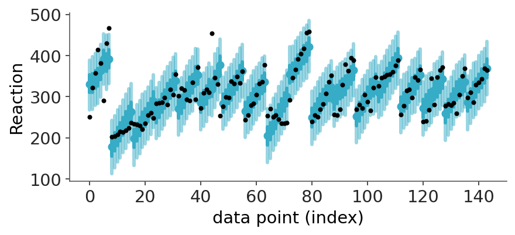
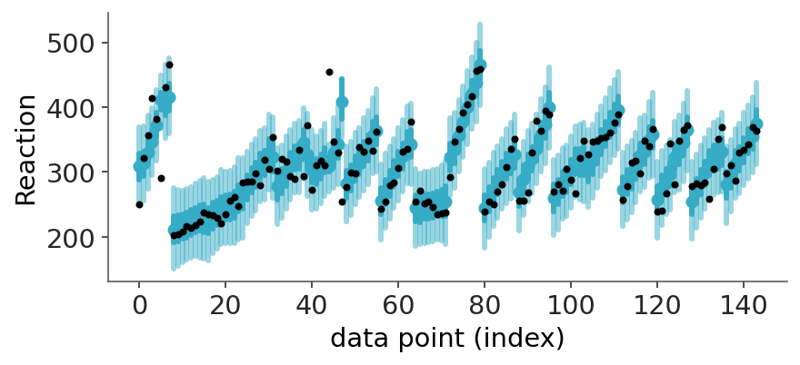
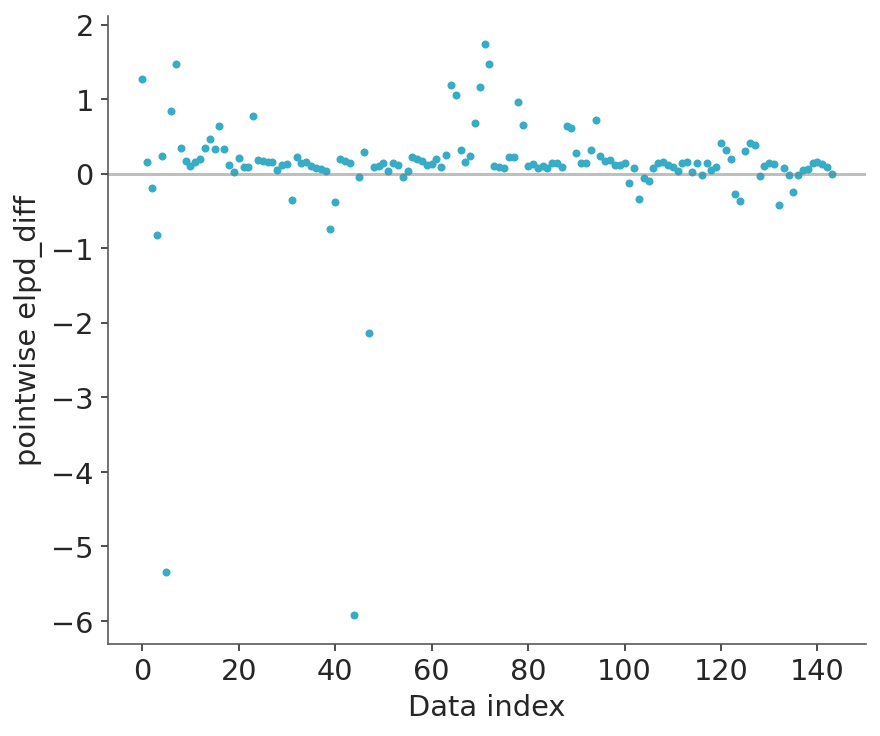
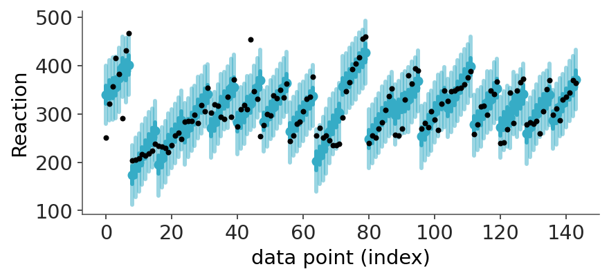
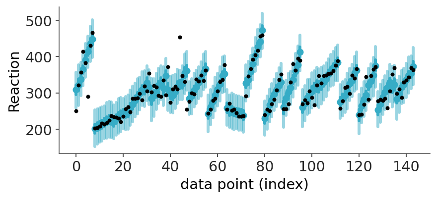
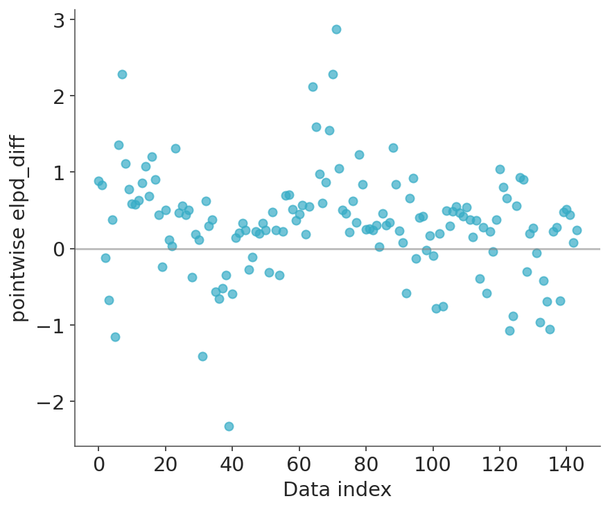

import warnings
import sys
sys.path.insert(0, '..')
import arviz as az
import bambi as bmb
import matplotlib.pyplot as plt
import numpy as np
import pandas as pd
import pymc as pm
az.style.use("arviz-variat")
az.rcParams["stats.ci_prob"] = 0.95
plt.rcParams["figure.dpi"] = 72
SEED = 30423Uncertainty in Bayesian LOO-CV Model Comparison
This notebook includes the code for the Bayesian Workflow book Section 9.4 Model selection using predictive checking and predictive performance (adapted from Section 5 of paper by Sivula et al. (2025)).
1 Introduction
We demonstrate the use of uncertainty quantification of the predictive performance difference with three real-data examples. We assume that the true data generating processes are more complex than the models used. We cover all three scenarios 1. very similar predictions, 2. model misspecification, 3. and small data, that can affect how well calibrated the normal approximation.
Inference was made using MCMC with 4 chains with 1000 warmup and 1000 sampling iterations. Convergence diagnostics (Vehtari et al. 2021) indicated reliable posterior inference. For LOO-CV we used PSIS-LOO (Vehtari, Gelman, and Gabry 2017) for computation.
Load packages
bambi_kwargs ={"random_seed": SEED, "idata_kwargs": {"log_likelihood": True}, "progressbar":False}2 Primate milk
McElreath (2020) describes the primate milk data: “A popular hypothesis has it that primates with larger brains produce more energetic milk, so that brains can grow quickly… The question here is to what extent energy content of milk, measured here by kilocalories, is related to the percent of the brain mass that is neocortex… We’ll end up needing female body mass as well, to see the masking that hides the relationships among the variables.” The data include 17 different primate species. The target variable is the energy content of milk (kcal.per.g) and the covariates are the percent of the brain mass that is neocortex (neocortex) and the logarithm of female body mass (log(mass)). The covariates and target are centered and scaled to have unit variance.
# Load and process the data in a single clean chain
milk = (
pd.read_csv(
"https://raw.githubusercontent.com/pymc-devs/resources/master/Rethinking_2/Data/milk.csv",
sep=";")
.filter(["kcal.per.g", "neocortex.perc", "mass"])
.rename(columns={"neocortex.perc": "neocortex"})
.assign(log_mass=lambda df: np.log(df["mass"]))
.dropna()
.drop(columns=["mass"])
)
# Center the predictor variables (subtract the mean)
predictors = ["neocortex", "log_mass"]
milk[predictors] = milk[predictors] - milk[predictors].mean()
milk.head()| kcal.per.g | neocortex | log_mass | |
|---|---|---|---|
| 0 | 0.49 | -12.415882 | -0.831486 |
| 5 | 0.47 | -3.035882 | 0.158913 |
| 6 | 0.56 | -3.035882 | 0.181513 |
| 7 | 0.89 | 0.064118 | -0.579032 |
| 9 | 0.92 | 1.274118 | -1.884978 |
We use the following four models with weakly informative normal(0, 1) priors for the coefficients and an exponential(1) prior for the residual scale: \[\begin{align*} \mathrm{M}_1: \quad & \mathrm{kcal.per.g} \sim \operatorname{normal}(\alpha, \sigma) \\ \mathrm{M}_2: \quad& \mathrm{kcal.per.g} \sim \operatorname{normal}(\alpha + \beta_1\times\mathrm{neocortex}, \sigma) \\ \mathrm{M}_3: \quad & \mathrm{kcal.per.g} \sim \operatorname{normal}(\alpha + \beta_2\times\mathrm{log(mass)}, \sigma) \\ \mathrm{M}_4: \quad & \mathrm{kcal.per.g} \sim \operatorname{normal}(\alpha + \beta_1\times\mathrm{neocortex} + \beta_2\times\mathrm{log(mass)}, \sigma). \end{align*}\]
We fit the models with the bambi package.
mod_m1 = bmb.Model("kcal.per.g ~ 1", milk)
dt_m1 = mod_m1.fit(**bambi_kwargs)
mod_m2 = bmb.Model("kcal.per.g ~ neocortex", milk)
dt_m2 = mod_m2.fit(**bambi_kwargs)
mod_m3 = bmb.Model("kcal.per.g ~ log_mass", milk)
dt_m3 = mod_m3.fit(**bambi_kwargs)
mod_m4 = bmb.Model("kcal.per.g ~ neocortex + log_mass", milk)
dt_m4 = mod_m4.fit(**bambi_kwargs)Initializing NUTS using jitter+adapt_diag...1000Multiprocess sampling (4 chains in 4 jobs)
NUTS: [sigma, Intercept]
/home/osvaldo/anaconda3/envs/arviz_1/lib/python3.14/site-packages/pymc/sampling/mcmc.py:1164: FutureWarning: Passing `log_likelihood` via `idata_kwargs` is deprecated and will be removed in future versions. Call `pm.compute_log_likelihood(idata)` instead.
return _sample_return(
Sampling 4 chains for 1_000 tune and 1_000 draw iterations (4_000 + 4_000 draws total) took 3 seconds.
Initializing NUTS using jitter+adapt_diag...1000Multiprocess sampling (4 chains in 4 jobs)
NUTS: [sigma, Intercept, neocortex]
/home/osvaldo/anaconda3/envs/arviz_1/lib/python3.14/site-packages/pymc/sampling/mcmc.py:1164: FutureWarning: Passing `log_likelihood` via `idata_kwargs` is deprecated and will be removed in future versions. Call `pm.compute_log_likelihood(idata)` instead.
return _sample_return(
Sampling 4 chains for 1_000 tune and 1_000 draw iterations (4_000 + 4_000 draws total) took 4 seconds.
Initializing NUTS using jitter+adapt_diag...1000Multiprocess sampling (4 chains in 4 jobs)
NUTS: [sigma, Intercept, log_mass]
/home/osvaldo/anaconda3/envs/arviz_1/lib/python3.14/site-packages/pymc/sampling/mcmc.py:1164: FutureWarning: Passing `log_likelihood` via `idata_kwargs` is deprecated and will be removed in future versions. Call `pm.compute_log_likelihood(idata)` instead.
return _sample_return(
Sampling 4 chains for 1_000 tune and 1_000 draw iterations (4_000 + 4_000 draws total) took 3 seconds.
Initializing NUTS using jitter+adapt_diag...1000Multiprocess sampling (4 chains in 4 jobs)
NUTS: [sigma, Intercept, neocortex, log_mass]
/home/osvaldo/anaconda3/envs/arviz_1/lib/python3.14/site-packages/pymc/sampling/mcmc.py:1164: FutureWarning: Passing `log_likelihood` via `idata_kwargs` is deprecated and will be removed in future versions. Call `pm.compute_log_likelihood(idata)` instead.
return _sample_return(
Sampling 4 chains for 1_000 tune and 1_000 draw iterations (4_000 + 4_000 draws total) took 4 seconds.We compute LOO-CV estimates using the fast PSIS-LOO method Vehtari et al. (2024)
We compare the models \(\mathrm{M}_1, \mathrm{M}_2,\mathrm{M}_3,\mathrm{M}_4\). Including p_worse, the probability that a model has worse predictive performance than the model with the best predictive performance. This probability is computing using a normal approximation for the elpd differences.
comp_milk = az.compare({
"M_4": dt_m4,
"M_3": dt_m3,
"M_2": dt_m2,
"M_1": dt_m1,
})
comp_milk/home/osvaldo/anaconda3/envs/arviz_1/lib/python3.14/site-packages/arviz_stats/loo/helper_loo.py:1146: UserWarning: Estimated shape parameter of Pareto distribution is greater than 0.70 for one or more samples. You should consider using a more robust model, this is because importance sampling is less likely to work well if the marginal posterior and LOO posterior are very different. This is more likely to happen with a non-robust model and highly influential observations.
warnings.warn(| rank | elpd_diff | dse | p_worse | diag_diff | diag_elpd | p | elpd | se | weight | |
|---|---|---|---|---|---|---|---|---|---|---|
| M_4 | 0 | 0.0 | 0.0 | NaN | 1 k̂ > 0.70 | 3.3 | 8.0 | 2.7 | 0.97 | |
| M_3 | 1 | -4.0 | 1.9 | 0.98 | N < 100 | 2.1 | 5.0 | 2.2 | 0.00 | |
| M_1 | 2 | -4.0 | 2.6 | 0.93 | N < 100 | 1.4 | 4.0 | 1.9 | 0.03 | |
| M_2 | 3 | -5.0 | 2.7 | 0.96 | N < 100 | 2.0 | 4.0 | 1.7 | 0.00 |
In the paper, the comparison was reported using \(M_1\) as the baseline, and the probability that a model has better predictive performance than the baseline.
comp_milk_ref = az.compare({
"M_4": dt_m4,
"M_3": dt_m3,
"M_2": dt_m2,
"M_1": dt_m1,
}, reference="M_1")
comp_milk_ref/home/osvaldo/anaconda3/envs/arviz_1/lib/python3.14/site-packages/arviz_stats/loo/helper_loo.py:1146: UserWarning: Estimated shape parameter of Pareto distribution is greater than 0.70 for one or more samples. You should consider using a more robust model, this is because importance sampling is less likely to work well if the marginal posterior and LOO posterior are very different. This is more likely to happen with a non-robust model and highly influential observations.
warnings.warn(| rank | elpd_diff | dse | p_better | diag_diff | diag_elpd | p | elpd | se | weight | |
|---|---|---|---|---|---|---|---|---|---|---|
| M_4 | 0 | 4.0 | 2.6 | 0.93 | N < 100 | 1 k̂ > 0.70 | 3.3 | 8.0 | 2.7 | 0.97 |
| M_3 | 1 | 0.0 | 1.2 | 0.55 | N < 100 | 2.1 | 5.0 | 2.2 | 0.00 | |
| M_1 | 2 | 0.0 | 0.0 | NaN | 1.4 | 4.0 | 1.9 | 0.03 | ||
| M_2 | 3 | -1.0 | 0.6 | 0.11 | N < 100 | 2.0 | 4.0 | 1.7 | 0.00 |
Based on model checking and the distribution of pointwise \(\widehat{\mathrm{elpd}}_{\mathrm{LOO}, i}\), the models seem to be reasonably specified and we are fine with respect to Scenario 2 (model misspecification). Models \(\mathrm{M}_2\) and \(\mathrm{M}_3\) have very small \(\widehat{\mathrm{elpd}}_{\mathrm{LOO}}\) compared to model \(\mathrm{M}_1\). The direct use of the normal approximation gives probabilities 0.12 and 0.6 that these models have better predictive performance than model \(\mathrm{M}_1\). As \(\widehat{\mathrm{elpd}}_{\mathrm{LOO}}\) is small (Scenario 1) and the number of observations is small (Scenario 3), we may assume \(\widehat{\mathrm{SE}}_{\mathrm{LOO}}\) to be underestimated and the error distribution to be more skewed than normal. However, since \(\widehat{\mathrm{elpd}}_{\mathrm{LOO}}\) is small, we can state that there is no practical or statistical difference in the predictive performance.
The direct use of \(\widehat{\mathrm{elpd}}_{\mathrm{LOO}}(\mathrm{M}_4,\mathrm{M}_1)\) and \(\widehat{\mathrm{SE}}_{\mathrm{LOO}}(\mathrm{M}_4,\mathrm{M}_1)\) would give probability \(0.93\) that model \(\mathrm{M}_4\) has better predictive than model \(\mathrm{M}_1\). This difference (4.2) is big enough that we are fine with respect to Scenario 1, but the number of observations is small (Scenario 3), and on expectation we may assume \(\widehat{\mathrm{SE}}_{\mathrm{LOO}}(\mathrm{M}_4,\mathrm{M}_1)\) to be underestimated. If we multiply \(\widehat{\mathrm{SE}}_{\mathrm{LOO}}(\mathrm{M}_4,\mathrm{M}_1)\) by 2 (heuristic based on the limit of equations by Bengio and Grandvalet (2004)) to make a more conservative estimate, the probability that model \(\mathrm{M}_4\) has better predictive performance is \(\approx 0.8\). Considering we have only 17 observations, this is quite good. Collecting more data is, however, recommended.
As the predictive distribution includes the aleatoric uncertainty (modelled by the data model), there is often more uncertainty in the predictive performance model comparison than in the posterior distribution (see, e.g., Wang and Gelman (2015)). In simple models, we can also look at the posterior for the quantities of interest. With model \(\mathrm{M}_4\), \(95\%\) central posterior intervals for \(\beta_1\) and \(\beta_2\) are \((1.1,3.7)\) and \((-0.12,-0.04)\) respectively, which indicates data have information about the parameters. The covariates neocortex and log(mass) are collinear, which causes correlation in the posterior of the coefficients, which could make the marginal posteriors overlap 0, even if the joint posterior does not, in which case, looking at the predictive performance is useful. In this case, although neocortex and log(mass) are collinear, they don’t have useful information alone, and the useful predictive information is along the second principal component of their joint distribution, which explains why the models with only one of the covariates are not better than the intercept-only model.
3 Sleep study
Belenky et al. (2003) collected data on the effect of chronic sleep restriction. The data contains average reaction times (in milliseconds) for 18 subjects with sleep restricted to 3 hours per night for 7 consecutive nights (days 0 and 1 were adaptation and training and removed from this analysis).
data = bmb.load_data("sleepstudy")
sleepstudy2 = data[data["Days"] >= 2].copy()The compared models are a linear model, a linear model with varying intercept for each subject, and a linear model with varying intercept and slope for each subject. All models use a normal data model. The models were fitted using bambi, and default priors; prior for the coefficient for Days is uniform, the prior for the varying intercept is normal with unknown scale having a half-normal prior, and the prior for the varying intercept and slope is bivariate normal with unknown scales having half-normal priors and correlation having LKJ prior (Lewandowski, Kurowicka, and Joe 2009).
Using the bambi formula notation, the compared models are \[\begin{align*}
\mathrm{M}_1: \quad & \mathrm{Reaction} \sim \mathrm{Days} \\
\mathrm{M}_2: \quad & \mathrm{Reaction} \sim \mathrm{Days} + (1\,\mid\,\mathrm{Subject}) \\
\mathrm{M}_3: \quad & \mathrm{Reaction} \sim \mathrm{Days} + (\mathrm{Days}\,\mid\, \mathrm{Subject}).
\end{align*}\]
Based on the study design, \(\mathrm{M}_3\) is the appropriate model for the analysis, but comparing models is useful for assessing how much information the data has about the varying intercepts and slopes. For a few LOO-folds with high Pareto-\(\hat{k}\) diagnostic value (\(>0.7\), Vehtari et al. (2024)) we re-ran MCMC.
mod_s1 = bmb.Model("Reaction ~ Days", sleepstudy2)
idata_s1 = mod_s1.fit(**bambi_kwargs)
mod_s2 = bmb.Model("Reaction ~ Days + (1 | Subject)", sleepstudy2, categorical="Subject")
idata_s2 = mod_s2.fit(**bambi_kwargs)
mod_s3 = bmb.Model("Reaction ~ Days + (Days | Subject)", sleepstudy2, categorical="Subject")
idata_s3 = mod_s3.fit(**bambi_kwargs)
mod_s2.predict(idata_s2, kind="response")
mod_s3.predict(idata_s3, kind="response")Initializing NUTS using jitter+adapt_diag...1000Multiprocess sampling (4 chains in 4 jobs)
NUTS: [sigma, Intercept, Days]
/home/osvaldo/anaconda3/envs/arviz_1/lib/python3.14/site-packages/pymc/sampling/mcmc.py:1164: FutureWarning: Passing `log_likelihood` via `idata_kwargs` is deprecated and will be removed in future versions. Call `pm.compute_log_likelihood(idata)` instead.
return _sample_return(
Sampling 4 chains for 1_000 tune and 1_000 draw iterations (4_000 + 4_000 draws total) took 4 seconds.
Initializing NUTS using jitter+adapt_diag...1000Multiprocess sampling (4 chains in 4 jobs)
NUTS: [sigma, Intercept, Days, 1|Subject_sigma, 1|Subject_offset]
/home/osvaldo/anaconda3/envs/arviz_1/lib/python3.14/site-packages/pymc/sampling/mcmc.py:1164: FutureWarning: Passing `log_likelihood` via `idata_kwargs` is deprecated and will be removed in future versions. Call `pm.compute_log_likelihood(idata)` instead.
return _sample_return(
Sampling 4 chains for 1_000 tune and 1_000 draw iterations (4_000 + 4_000 draws total) took 5 seconds.
There were 2 divergences after tuning. Increase `target_accept` or reparameterize.
Initializing NUTS using jitter+adapt_diag...1000Multiprocess sampling (4 chains in 4 jobs)
NUTS: [sigma, Intercept, Days, 1|Subject_sigma, 1|Subject_offset, Days|Subject_sigma, Days|Subject_offset]
/home/osvaldo/anaconda3/envs/arviz_1/lib/python3.14/site-packages/pymc/sampling/mcmc.py:1164: FutureWarning: Passing `log_likelihood` via `idata_kwargs` is deprecated and will be removed in future versions. Call `pm.compute_log_likelihood(idata)` instead.
return _sample_return(
Sampling 4 chains for 1_000 tune and 1_000 draw iterations (4_000 + 4_000 draws total) took 7 seconds.We compare the models \(\mathrm{M}_1, \mathrm{M}_2,\mathrm{M}_3\).
comp_sleep = az.compare({
"M_3": idata_s3,
"M_2": idata_s2,
"M_1": idata_s1,
})
comp_sleep/home/osvaldo/anaconda3/envs/arviz_1/lib/python3.14/site-packages/arviz_stats/loo/helper_loo.py:1146: UserWarning: Estimated shape parameter of Pareto distribution is greater than 0.70 for one or more samples. You should consider using a more robust model, this is because importance sampling is less likely to work well if the marginal posterior and LOO posterior are very different. This is more likely to happen with a non-robust model and highly influential observations.
warnings.warn(| rank | elpd_diff | dse | p_worse | diag_diff | diag_elpd | p | elpd | se | weight | |
|---|---|---|---|---|---|---|---|---|---|---|
| M_3 | 0 | 0.0 | 0.0 | NaN | 3 k̂ > 0.70 | 31.4 | -690.0 | 22.0 | 0.95 | |
| M_2 | 1 | -10.0 | 9.5 | 0.94 | 19.7 | -710.0 | 15.0 | 0.00 | ||
| M_1 | 2 | -80.0 | 20.0 | 1.00 | 3.0 | -770.0 | 9.0 | 0.05 |
Model \(\mathrm{M}_3\) is estimated to have better predictive performance, but only with 0.9 probability of having better performance than model \(\mathrm{M}_2\). Model-checking reveals that two observations are clear outliers with respect to these models, making the normal approximation likely to be poorly calibrated (Scenario 3).
The difference is slightly smaller as can be expected as usually elpd estimates with high Pareto-k’s are optimistic.
Although we can get more accurate elpd and elpd_diff estimates with more computation, the accuracy of the normal approximation for the uncertainty in the difference can still be compromised by the outliers. Model-checking reveals that two observations are clear outliers with respect to these models, making the normal approximation likely to be poorly calibrated (Scenario 3). We see the outliers, for example, by comparing LOO predictive intervals to observations.
labeller = az.labels.MapLabeller({"y": "Reaction time (ms)"})
pc = az.plot_loo_interval(idata_s2,
labeller=labeller,
)
pc = az.plot_loo_interval(idata_s3,
labeller=labeller,
)/home/osvaldo/anaconda3/envs/arviz_1/lib/python3.14/site-packages/arviz_stats/loo/helper_loo.py:1146: UserWarning: Estimated shape parameter of Pareto distribution is greater than 0.70 for one or more samples. You should consider using a more robust model, this is because importance sampling is less likely to work well if the marginal posterior and LOO posterior are very different. This is more likely to happen with a non-robust model and highly influential observations.
warnings.warn(
/home/osvaldo/anaconda3/envs/arviz_1/lib/python3.14/site-packages/arviz_stats/loo/helper_loo.py:1146: UserWarning: Estimated shape parameter of Pareto distribution is greater than 0.70 for one or more samples. You should consider using a more robust model, this is because importance sampling is less likely to work well if the marginal posterior and LOO posterior are very different. This is more likely to happen with a non-robust model and highly influential observations.
warnings.warn(
/home/osvaldo/anaconda3/envs/arviz_1/lib/python3.14/site-packages/arviz_stats/loo/helper_loo.py:1146: UserWarning: Estimated shape parameter of Pareto distribution is greater than 0.70 for one or more samples. You should consider using a more robust model, this is because importance sampling is less likely to work well if the marginal posterior and LOO posterior are very different. This is more likely to happen with a non-robust model and highly influential observations.
warnings.warn(
If we examine the pointwise differences, we see that model 3 is almost always better, but outliers cause couple values with big magnitude, making it more likely that the normal approximation for quantifying uncertainty in elpd_diff is not accurate.
loo_s2 = az.loo(idata_s2)
loo_s3 = az.loo(idata_s3)
pointwise_diff = loo_s3.elpd_i - loo_s2.elpd_i
_, ax = plt.subplots()
ax.plot(pointwise_diff, ".")
ax.axhline(y=0, color="gray", alpha=0.5, linestyle="-")
ax.set(xlabel="Data index", ylabel="pointwise elpd_diff")/home/osvaldo/anaconda3/envs/arviz_1/lib/python3.14/site-packages/arviz_stats/loo/helper_loo.py:1146: UserWarning: Estimated shape parameter of Pareto distribution is greater than 0.70 for one or more samples. You should consider using a more robust model, this is because importance sampling is less likely to work well if the marginal posterior and LOO posterior are very different. This is more likely to happen with a non-robust model and highly influential observations.
warnings.warn(
We also fitted models using a Student’s \(t\) model to create models \(\mathrm{M}_{1t}\), \(\mathrm{M}_{2t}\), and \(\mathrm{M}_{3t}\). Based on model checking, there is no obvious model misspecification.
mod_s1t = bmb.Model("Reaction ~ Days", sleepstudy2, family="t")
idata_s1t = mod_s1t.fit(**bambi_kwargs)
mod_s2t = bmb.Model("Reaction ~ Days + (1 | Subject)", sleepstudy2, family="t")
idata_s2t = mod_s2t.fit(**bambi_kwargs)
mod_s3t = bmb.Model("Reaction ~ Days + (Days | Subject)", sleepstudy2, family="t")
idata_s3t = mod_s3t.fit(**bambi_kwargs)
mod_s2t.predict(idata_s2t, kind="response")
mod_s3t.predict(idata_s3t, kind="response")Initializing NUTS using jitter+adapt_diag...1000Multiprocess sampling (4 chains in 4 jobs)
NUTS: [nu, sigma, Intercept, Days]
/home/osvaldo/anaconda3/envs/arviz_1/lib/python3.14/site-packages/pymc/sampling/mcmc.py:1164: FutureWarning: Passing `log_likelihood` via `idata_kwargs` is deprecated and will be removed in future versions. Call `pm.compute_log_likelihood(idata)` instead.
return _sample_return(
Sampling 4 chains for 1_000 tune and 1_000 draw iterations (4_000 + 4_000 draws total) took 5 seconds.
There were 4 divergences after tuning. Increase `target_accept` or reparameterize.
Initializing NUTS using jitter+adapt_diag...1000Multiprocess sampling (4 chains in 4 jobs)
NUTS: [nu, sigma, Intercept, Days, 1|Subject_sigma, 1|Subject_offset]
/home/osvaldo/anaconda3/envs/arviz_1/lib/python3.14/site-packages/pymc/sampling/mcmc.py:1164: FutureWarning: Passing `log_likelihood` via `idata_kwargs` is deprecated and will be removed in future versions. Call `pm.compute_log_likelihood(idata)` instead.
return _sample_return(
Sampling 4 chains for 1_000 tune and 1_000 draw iterations (4_000 + 4_000 draws total) took 7 seconds.
Initializing NUTS using jitter+adapt_diag...1000Multiprocess sampling (4 chains in 4 jobs)
NUTS: [nu, sigma, Intercept, Days, 1|Subject_sigma, 1|Subject_offset, Days|Subject_sigma, Days|Subject_offset]
/home/osvaldo/anaconda3/envs/arviz_1/lib/python3.14/site-packages/pymc/sampling/mcmc.py:1164: FutureWarning: Passing `log_likelihood` via `idata_kwargs` is deprecated and will be removed in future versions. Call `pm.compute_log_likelihood(idata)` instead.
return _sample_return(
Sampling 4 chains for 1_000 tune and 1_000 draw iterations (4_000 + 4_000 draws total) took 13 seconds.LOO predictive intervals look now better.
pc = az.plot_loo_interval(idata_s2t,
labeller=labeller,
)/home/osvaldo/anaconda3/envs/arviz_1/lib/python3.14/site-packages/arviz_stats/loo/helper_loo.py:1146: UserWarning: Estimated shape parameter of Pareto distribution is greater than 0.70 for one or more samples. You should consider using a more robust model, this is because importance sampling is less likely to work well if the marginal posterior and LOO posterior are very different. This is more likely to happen with a non-robust model and highly influential observations.
warnings.warn(
/home/osvaldo/anaconda3/envs/arviz_1/lib/python3.14/site-packages/arviz_stats/loo/helper_loo.py:1146: UserWarning: Estimated shape parameter of Pareto distribution is greater than 0.70 for one or more samples. You should consider using a more robust model, this is because importance sampling is less likely to work well if the marginal posterior and LOO posterior are very different. This is more likely to happen with a non-robust model and highly influential observations.
warnings.warn(
/home/osvaldo/anaconda3/envs/arviz_1/lib/python3.14/site-packages/arviz_stats/loo/helper_loo.py:1146: UserWarning: Estimated shape parameter of Pareto distribution is greater than 0.70 for one or more samples. You should consider using a more robust model, this is because importance sampling is less likely to work well if the marginal posterior and LOO posterior are very different. This is more likely to happen with a non-robust model and highly influential observations.
warnings.warn(
pc = az.plot_loo_interval(idata_s3t,
labeller=labeller,
)
We first compare \(\mathrm{M}_{3}\) and \(\mathrm{M}_{3t}\) to see whether a Student’s \(t\) model is more appropriate.
comp_s3_s3t = az.compare({"M_3t": idata_s3t, "M_3": idata_s3})
comp_s3_s3t/home/osvaldo/anaconda3/envs/arviz_1/lib/python3.14/site-packages/arviz_stats/loo/helper_loo.py:1146: UserWarning: Estimated shape parameter of Pareto distribution is greater than 0.70 for one or more samples. You should consider using a more robust model, this is because importance sampling is less likely to work well if the marginal posterior and LOO posterior are very different. This is more likely to happen with a non-robust model and highly influential observations.
warnings.warn(| rank | elpd_diff | dse | p_worse | diag_diff | diag_elpd | p | elpd | se | weight | |
|---|---|---|---|---|---|---|---|---|---|---|
| M_3t | 0 | 0.0 | 0.0 | NaN | 42.0 | -650.0 | 14.0 | 1.0 | ||
| M_3 | 1 | -40.0 | 13.0 | 1.0 | 3 k̂ > 0.70 | 31.4 | -690.0 | 22.0 | 0.0 |
Although in this comparison \(\mathrm{M}_3\) is misspecified, the better specified model \(\mathrm{M}_{3t}\) shows much better predictive performance, and as we can expect \(\widehat{\mathrm{SE}}_{\mathrm{LOO}}\) to be inflated, the actual probability that \(\mathrm{M}_{3t}\) is better than \(\mathrm{M}_3\) is likely to be bigger than \(0.999\). We then compare the three Student’s \(t\) models:
comp_st = az.compare({
"M_3t": idata_s3t,
"M_2t": idata_s2t,
"M_1t": idata_s1t,
})
comp_st/home/osvaldo/anaconda3/envs/arviz_1/lib/python3.14/site-packages/arviz_stats/loo/helper_loo.py:1146: UserWarning: Estimated shape parameter of Pareto distribution is greater than 0.70 for one or more samples. You should consider using a more robust model, this is because importance sampling is less likely to work well if the marginal posterior and LOO posterior are very different. This is more likely to happen with a non-robust model and highly influential observations.
warnings.warn(| rank | elpd_diff | dse | p_worse | diag_diff | diag_elpd | p | elpd | se | weight | |
|---|---|---|---|---|---|---|---|---|---|---|
| M_3t | 0 | 0.0 | 0.0 | NaN | 42.0 | -650.0 | 14.0 | 0.96 | ||
| M_2t | 1 | -50.0 | 8.3 | 1.0 | 1 k̂ > 0.70 | 23.3 | -700.0 | 12.0 | 0.00 | |
| M_1t | 2 | -120.0 | 16.0 | 1.0 | 3.3 | -770.0 | 9.4 | 0.04 |
The probability that model \(\mathrm{M}_{3t}\) is better than models \(\mathrm{M}_{1t}\) and \(\mathrm{M}_{2t}\) is close to 1. The models appear sufficiently well specified, the number of observations is bigger than 100, and the differences are not small, so we can assume that the normal approximation is well calibrated.
If we examine the pointwise differences, we see that model 3 is almost always better, and as there are no outliers, the distribution of pointwise elpd differences is such that the normal approximation for quantifying uncertainty in elpd_diff is likely to be accurate.
loo_s2t = az.loo(idata_s2t)
loo_s3t = az.loo(idata_s3t)
pointwise_diff_t = loo_s3t.elpd_i - loo_s2t.elpd_i
fig, ax = plt.subplots()
ax.scatter(range(len(pointwise_diff_t)), pointwise_diff_t, alpha=0.7)
ax.axhline(y=0, color="gray", alpha=0.5, linestyle="-")
ax.set(xlabel="Data index", ylabel="pointwise elpd_diff")/home/osvaldo/anaconda3/envs/arviz_1/lib/python3.14/site-packages/arviz_stats/loo/helper_loo.py:1146: UserWarning: Estimated shape parameter of Pareto distribution is greater than 0.70 for one or more samples. You should consider using a more robust model, this is because importance sampling is less likely to work well if the marginal posterior and LOO posterior are very different. This is more likely to happen with a non-robust model and highly influential observations.
warnings.warn(
In this case, the effect of days with sleep constrained to 3 hours is so big that the main conclusion stays the same with all the models. Still, for example, model \(\mathrm{M}_{3t}\) does indicate higher variation between subjects than model \(\mathrm{M}_{3}\). As \(\mathrm{M}_{3t}\) passes the model checking and has higher predictive performance, we should continue looking at the posterior of model \(\mathrm{M}_{3t}\).
4 Roaches
Gelman and Hill (2007) describe in Chapter 8.3 the roaches data as follows: “the treatment and control were applied to 160 and 104 apartments, respectively, and the outcome measurement \(y_i\) in each apartment \(i\) was the number of roaches caught in a set of traps. Different apartments had traps for different numbers of days”. The goal is to estimate the efficacy of a pest management system at reducing the number of roaches.
roaches = pd.read_csv("data/roaches.csv")
roaches["sqrt_roach1"] = np.sqrt(roaches["roach1"])The target is the number of roaches (y), and the covariates include the square root of the pre-treatment number of roaches (sqrt_roach1), a treatment indicator variable (treatment), and a variable indicating whether the apartment is in a building restricted to elderly residents (senior). As the number of days for which the roach traps were used is not the same for all apartments, the offset argument includes the logarithm of the number of days the traps were used (log(exposure2)). The latent regression model presented with bambi formula notation is:
\[ \mathrm{y} \sim \mathrm{sqrt\_roach1} + \mathrm{treatment} + \mathrm{senior} + \mathrm{offset(log(exposure2))}. \]
We fit the following models using the bambi package. \[\begin{align*}
\mathrm{M}_1: \quad & \text{Poisson} \\
\mathrm{M}_2: \quad & \text{Negative.binomial} \\
\mathrm{M}_3: \quad & \text{Zero-inflated negative-binomial} \\
\end{align*}\]
The zero-inflation is modelled using the same latent formula (with its own parameters). All coefficients have \(\operatorname{normal}(0,1)\) priors and the negative-binomial shape parameter has the inverse-gamma\((.4, .3)\) prior (Vehtari 2024).
For the Poisson model we re-ran MCMC for all LOO-folds with high Pareto-\(\hat{k}\) diagnostic value (>0.7), and for negative-binomial and zero-inflated negative-binomial we used moment matching (Paananen et al. 2021) for a few LOO-folds with high Pareto-\(\hat{k}\) diagnostic value (>0.7).
roaches_priors = {
"sqrt_roach1": bmb.Prior("Normal", mu=0, sigma=1),
"treatment": bmb.Prior("Normal", mu=0, sigma=1),
"senior": bmb.Prior("Normal", mu=0, sigma=1),
}
mod_r1 = bmb.Model(
"y ~ sqrt_roach1 + treatment + senior + offset(log(exposure2))",
roaches,
family="poisson",
link="log",
priors=roaches_priors,
)
idata_r1 = mod_r1.fit(**bambi_kwargs)
mod_r2 = bmb.Model(
"y ~ sqrt_roach1 + treatment + senior + offset(log(exposure2))",
roaches,
family="negativebinomial",
link="log",
priors={
**roaches_priors,
"alpha": bmb.Prior("InverseGamma", alpha=0.4, beta=0.3),
},
)
idata_r2 = mod_r2.fit(**bambi_kwargs)
formula = bmb.Formula(
"y ~ sqrt_roach1 + treatment + senior + offset(log(exposure2))",
"psi ~ sqrt_roach1 + treatment + senior + offset(log(exposure2))",
)
mod_r3 = bmb.Model(
formula,
roaches,
family="zero_inflated_negativebinomial",
link={"mu": "log", "psi": "logit"},
priors={
**roaches_priors,
"alpha": bmb.Prior("InverseGamma", alpha=0.4, beta=0.3),
},
)
idata_r3 = mod_r3.fit(**bambi_kwargs)Initializing NUTS using jitter+adapt_diag...1000Multiprocess sampling (4 chains in 4 jobs)
NUTS: [Intercept, sqrt_roach1, treatment, senior]
/home/osvaldo/anaconda3/envs/arviz_1/lib/python3.14/site-packages/pymc/step_methods/hmc/quadpotential.py:321: RuntimeWarning: overflow encountered in dot
return 0.5 * np.dot(x, v_out)
/home/osvaldo/anaconda3/envs/arviz_1/lib/python3.14/site-packages/pymc/step_methods/hmc/quadpotential.py:321: RuntimeWarning: overflow encountered in dot
return 0.5 * np.dot(x, v_out)
/home/osvaldo/anaconda3/envs/arviz_1/lib/python3.14/site-packages/pymc/sampling/mcmc.py:1164: FutureWarning: Passing `log_likelihood` via `idata_kwargs` is deprecated and will be removed in future versions. Call `pm.compute_log_likelihood(idata)` instead.
return _sample_return(
Sampling 4 chains for 1_000 tune and 1_000 draw iterations (4_000 + 4_000 draws total) took 4 seconds.
Initializing NUTS using jitter+adapt_diag...1000Multiprocess sampling (4 chains in 4 jobs)
NUTS: [alpha, Intercept, sqrt_roach1, treatment, senior]
/home/osvaldo/anaconda3/envs/arviz_1/lib/python3.14/site-packages/pymc/sampling/mcmc.py:1164: FutureWarning: Passing `log_likelihood` via `idata_kwargs` is deprecated and will be removed in future versions. Call `pm.compute_log_likelihood(idata)` instead.
return _sample_return(
Sampling 4 chains for 1_000 tune and 1_000 draw iterations (4_000 + 4_000 draws total) took 6 seconds.1000Initializing NUTS using jitter+adapt_diag...
Multiprocess sampling (4 chains in 4 jobs)
NUTS: [alpha, Intercept, sqrt_roach1, treatment, senior, psi_Intercept, psi_sqrt_roach1, psi_treatment, psi_senior]
/home/osvaldo/anaconda3/envs/arviz_1/lib/python3.14/site-packages/pymc/sampling/mcmc.py:1164: FutureWarning: Passing `log_likelihood` via `idata_kwargs` is deprecated and will be removed in future versions. Call `pm.compute_log_likelihood(idata)` instead.
return _sample_return(
Sampling 4 chains for 1_000 tune and 1_000 draw iterations (4_000 + 4_000 draws total) took 10 seconds.comp_roaches = az.compare({
"M_3 (ZINB)": idata_r3,
"M_2 (NB)": idata_r2,
"M_1 (Poisson)": idata_r1,
})
comp_roaches/home/osvaldo/anaconda3/envs/arviz_1/lib/python3.14/site-packages/arviz_stats/loo/helper_loo.py:1146: UserWarning: Estimated shape parameter of Pareto distribution is greater than 0.70 for one or more samples. You should consider using a more robust model, this is because importance sampling is less likely to work well if the marginal posterior and LOO posterior are very different. This is more likely to happen with a non-robust model and highly influential observations.
warnings.warn(
/home/osvaldo/anaconda3/envs/arviz_1/lib/python3.14/site-packages/arviz_stats/loo/helper_loo.py:1146: UserWarning: Estimated shape parameter of Pareto distribution is greater than 0.70 for one or more samples. You should consider using a more robust model, this is because importance sampling is less likely to work well if the marginal posterior and LOO posterior are very different. This is more likely to happen with a non-robust model and highly influential observations.
warnings.warn(| rank | elpd_diff | dse | p_worse | diag_diff | diag_elpd | p | elpd | se | weight | |
|---|---|---|---|---|---|---|---|---|---|---|
| M_3 (ZINB) | 0 | 0.0 | 0.0 | NaN | 10.1 | -860.0 | 38.0 | 0.9 | ||
| M_2 (NB) | 1 | -20.0 | 6.9 | 1.0 | 2 k̂ > 0.70 | 8.2 | -880.0 | 38.0 | 0.1 | |
| M_1 (Poisson) | 2 | -5000.0 | 680.0 | 1.0 | 15 k̂ > 0.70 | 262.7 | -5000.0 | 700.0 | 0.0 |
The zero-inflated negative-binomial model (\(\mathrm{M}_3\)) is clearly the best. Based on model checking, the Poisson model (\(\mathrm{M}_1\)) is underdispersed which indicates Scenario 2 (model misspecification), but the difference is so big that we can be certain that the zero-inflated negative-binomial model is better. As the number of observations is larger than 100, and the difference to model \(\mathrm{M}_2\) is not small, we may assume the normal approximation is well calibrated.
As we had used an ad-hoc square root transformation of pre-treatment number of roaches, we fitted a model \(\mathrm{M}_4\) replacing the latent linear term for the square root of pre-treatment number of roaches with a spline.
formula = bmb.Formula(
"y ~ bs(sqrt_roach1, df=7) + treatment + senior + offset(log(exposure2))",
"psi ~ bs(sqrt_roach1, df=7) + treatment + senior + offset(log(exposure2))",
)
mod_r4 = bmb.Model(
formula,
roaches,
family="zero_inflated_negativebinomial",
link={"mu": "log", "psi": "logit"},
priors={
**roaches_priors,
"psi": {
"Intercept": bmb.Prior("Normal", mu=0, sigma=1),
"common": bmb.Prior("Normal", mu=0, sigma=1),
},
"alpha": bmb.Prior("InverseGamma", alpha=0.4, beta=0.3),
},
)
idata_r4 = mod_r4.fit(**bambi_kwargs)1000Initializing NUTS using jitter+adapt_diag...
Multiprocess sampling (4 chains in 4 jobs)
NUTS: [alpha, Intercept, bs(sqrt_roach1, df=7), treatment, senior, psi_Intercept, psi_bs(sqrt_roach1, df=7), psi_treatment, psi_senior]
/home/osvaldo/anaconda3/envs/arviz_1/lib/python3.14/site-packages/pymc/sampling/mcmc.py:1164: FutureWarning: Passing `log_likelihood` via `idata_kwargs` is deprecated and will be removed in future versions. Call `pm.compute_log_likelihood(idata)` instead.
return _sample_return(
Sampling 4 chains for 1_000 tune and 1_000 draw iterations (4_000 + 4_000 draws total) took 22 seconds.
There were 5 divergences after tuning. Increase `target_accept` or reparameterize.az.compare({"M_4 (ZINB+spline)": idata_r4, "M_3 (ZINB)": idata_r3})/home/osvaldo/anaconda3/envs/arviz_1/lib/python3.14/site-packages/arviz_stats/loo/helper_loo.py:1146: UserWarning: Estimated shape parameter of Pareto distribution is greater than 0.70 for one or more samples. You should consider using a more robust model, this is because importance sampling is less likely to work well if the marginal posterior and LOO posterior are very different. This is more likely to happen with a non-robust model and highly influential observations.
warnings.warn(| rank | elpd_diff | dse | p_worse | diag_diff | diag_elpd | p | elpd | se | weight | |
|---|---|---|---|---|---|---|---|---|---|---|
| M_4 (ZINB+spline) | 0 | 0.0 | 0.0 | NaN | 1 k̂ > 0.70 | 15.0 | -860.0 | 37.0 | 0.6 | |
| M_3 (ZINB) | 1 | -3.0 | 4.8 | 0.72 | |elpd_diff| < 4 | 10.1 | -860.0 | 38.0 | 0.4 |
Model \(\mathrm{M}_4\) (with spline) seems to be slightly better, but now the difference is so small (Scenario 1) that the normal approximation is likely to be not perfectly calibrated. As the difference is small, we can proceed with either model.
References
Belenky, G., N. J. Wesensten, D. R. Thorne, M. L. Thomas, H. C. Sing, D. P. Redmond, M. B. Russo, and T. J. Balkin. 2003. “Patterns of Performance Degradation and Restoration During Sleep Restriction and Subsequent Recovery: A Sleep Dose-Response Study.” Journal of Sleep Research 12: 1–12.
Bengio, Yoshua, and Yves Grandvalet. 2004. “No Unbiased Estimator of the Variance of K-Fold Cross-Validation.” Journal of Machine Learning Research 5: 1089–1105.
Gelman, Andrew, and Jennifer Hill. 2007. Data Analysis Using Regression and Multilevel/Hierarchical Models. Cambridge University Press.
Lewandowski, D., D. Kurowicka, and H. Joe. 2009. “Generating Random Correlation Matrices Based on Vines and Extended Onion Method.” Journal of Multivariate Analysis 100: 1989–2001.
McElreath, Richard. 2020. Statistical Rethinking: A Bayesian Course with Examples in r and Stan. CRC Press.
Paananen, Topi, Juho Piironen, Paul-Christian Bürkner, and Aki Vehtari. 2021. “Implicitly Adaptive Importance Sampling.” Statistics and Computing 31 (16).
Sivula, T., M. Magnusson, A. A. Matamoros, and A. Vehtari. 2025. “Uncertainty in Bayesian Leave-One-Out Cross-Validation Based Model Comparison.” Bayesian Analysis.
Vehtari, Aki. 2024. “Default Prior for Negative-Binomial Shape Parameter.”
Vehtari, Aki, Andrew Gelman, and Jonah Gabry. 2017. “Practical Bayesian Model Evaluation Using Leave-One-Out Cross-Validation and WAIC.” Statistics and Computing 27 (5): 1413–32.
Vehtari, Aki, Andrew Gelman, Daniel Simpson, Bob Carpenter, and Paul-Christian Bürkner. 2021. “Rank-Normalization, Folding, and Localization: An Improved \(\widehat{R}\) for Assessing Convergence of MCMC (with Discussion).” Bayesian Analysis 16 (2): 667–718.
Vehtari, Aki, Daniel Simpson, Andrew Gelman, Yuling Yao, and Jonah Gabry. 2024. “Pareto Smoothed Importance Sampling.” Journal of Machine Learning Research 25 (72).
Wang, W., and A. Gelman. 2015. “Difficulty of Selecting Among Multilevel Models Using Predictive Accuracy.” Statistics and Its Interface 8 (2): 153–60.
Licenses
- Code © 2025–2026, Aki Vehtari, licensed under BSD-3.
- Text © 2025–2026, Aki Vehtari, licensed under CC-BY-NC 4.0.